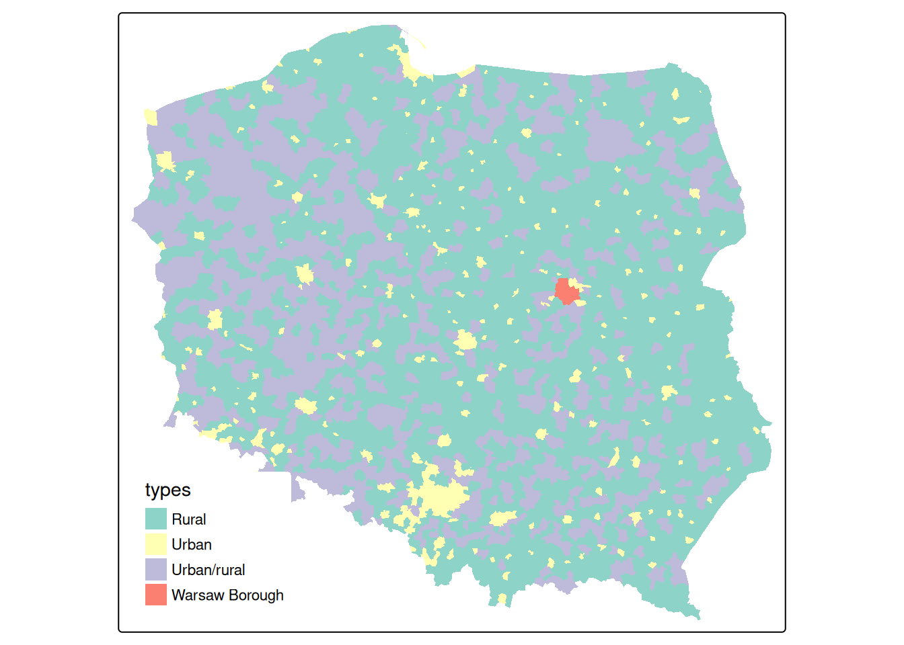
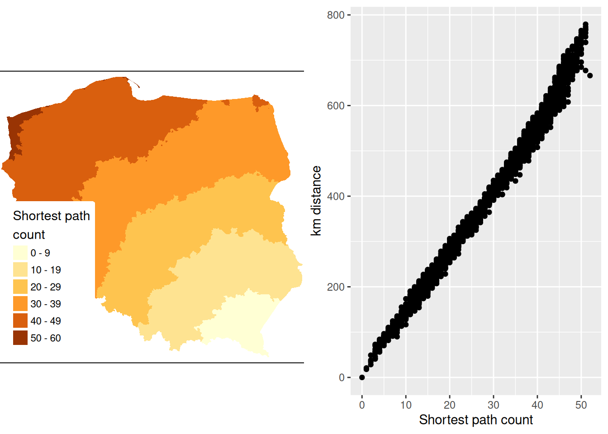

library(sf)
# Linking to GEOS 3.11.1, GDAL 3.6.2, PROJ 9.1.1; sf_use_s2() is TRUE14 Proximity and Areal Data
Areal units of observation are very often used when simultaneous observations are aggregated within non-overlapping boundaries. The boundaries may be those of administrative entities and may be related to underlying spatial processes, such as commuting flows, but are usually arbitrary. If they do not match the underlying and unobserved spatial processes in one or more variables of interest, proximate areal units will contain parts of the underlying processes, engendering spatial autocorrelation. By proximity, we mean closeness in ways that make sense for the data generation processes thought to be involved. In cross-sectional geostatistical analysis with point support, measured distance makes sense for typical data generation processes. In similar analysis of areal data, sharing a border may make more sense, because that is what we do know, but we cannot measure the distance between the areas in as adequate a way.
By support of data we mean the physical size (length, area, volume) associated with an individual observational unit (measurement; see Chapter 5). It is possible to represent the support of areal data by a point, despite the fact that the data have polygonal support. The centroid of the polygon may be taken as a representative point, or the centroid of the largest polygon in a multi-polygon object. When data with intrinsic point support are treated as areal data, the change of support goes the other way, from the known point to a non-overlapping tessellation such as a Voronoi diagram or Dirichlet tessellation or Thiessen polygons often through a Delaunay triangulation using projected coordinates. Here, different metrics may also be chosen, or distances measured on a network rather than on the plane. There is also a literature using weighted Voronoi diagrams in local spatial analysis (see for example Boots and Okabe 2007; Okabe et al. 2008; She et al. 2015).
When the intrinsic support of the data is represented as points, but the underlying process is between proximate observations rather than driven chiefly by distance between observations, the data may be aggregate counts or totals (polling stations, retail turnover) or represent a directly observed characteristic of the observation (opening hours of the polling station). Obviously, the risk of misrepresenting the footprint of the underlying spatial processes remains in all of these cases, not least because the observations are taken as encompassing the entirety of the underlying process in the case of tessellation of the whole area of interest. This is distinct from the geostatistical setting in which observations are rather samples taken using some scheme within the area of interest. It is also partly distinct from the practice of taking areal sample plots within the area of interest but covering only a small proportion of the area, typically used in ecological and environmental research.
In order to explore and analyse areal data of these kinds in Chapters -Chapter 15 - -Chapter 17, methods are needed to represent the proximity of observations. This chapter considers a subset of such methods, where the spatial processes are considered as working through proximity understood in the first instance as contiguity, as a graph linking observations taken as neighbours. This graph is typically undirected and unweighted, but may be directed and/or weighted in certain settings, which then leads to further issues with regard to symmetry. In principle, proximity would be expected to operate symmetrically in space, that is that the influence of \(i\) on \(j\) and of \(j\) on \(i\) based on their relative positions should be equivalent. Edge effects are not considered in standard treatments.
14.1 Representing proximity in spdep
Handling spatial autocorrelation using relationships to neighbours on a graph takes the graph as given, chosen by the analyst. This differs from the geostatistical approach in which the analyst chooses the binning of the empirical variogram and function used, and then the way the variogram is fitted. Both involve a priori choices, but represent the underlying correlation in different ways (Wall 2004). In Bavaud (1998) and work citing his contribution, attempts have been made to place graph-based neighbours in a broader context.
One issue arising in the creation of objects representing neighbourhood relationships is that of no-neighbour areal units (Bivand and Portnov 2004). Islands or units separated by rivers may not be recognised as neighbours when the units have areal support and when using topological relationships such as shared boundaries. In some settings, for example mrf (Markov Random Field) terms in mgcv::gam and similar model fitting functions, undirected connected graphs are required, which is violated when there are disconnected subgraphs.
No-neighbour observations can also occur when a distance threshold is used between points, where the threshold is smaller than the maximum nearest neighbour distance. Shared boundary contiguities are not affected by using geographical, unprojected coordinates, but all point-based approaches use distance in one way or another, and need to calculate distances in an appropriate way.
The spdep package provides an nb class for neighbours, a list of length equal to the number of observations, with integer vector components. No-neighbours are encoded as an integer vector with a single element 0L, and observations with neighbours as sorted integer vectors containing values in 1L:n pointing to the neighbouring observations. This is a typical row-oriented sparse representation of neighbours. spdep provides many ways of constructing nb objects, and the representation and construction functions are widely used in other packages.
spdep builds on the nb representation (undirected or directed graphs) with the listw object, a list with three components, an nb object, a matching list of numerical weights, and a single element character vector containing the single letter name of the way in which the weights were calculated. The most frequently used approach in the social sciences is calculating weights by row standardisation, so that all the non-zero weights for one observation will be the inverse of the cardinality of its set of neighbours (1/card(nb)[i]).
We will be using election data from the 2015 Polish presidential election in this chapter, with 2495 municipalities and Warsaw boroughs (see Figure 14.1) for a tmap map (Section 8.5) of the municipality types, and complete count data from polling stations aggregated to these areal units. The data are an sf sf object:
data(pol_pres15, package = "spDataLarge")
pol_pres15 |>
subset(select = c(TERYT, name, types)) |>
head()
# Simple feature collection with 6 features and 3 fields
# Geometry type: MULTIPOLYGON
# Dimension: XY
# Bounding box: xmin: 235000 ymin: 367000 xmax: 281000 ymax: 413000
# Projected CRS: ETRS89 / Poland CS92
# TERYT name types
# 1 020101 BOLESŁAWIEC Urban
# 2 020102 BOLESŁAWIEC Rural
# 3 020103 GROMADKA Rural
# 4 020104 NOWOGRODZIEC Urban/rural
# 5 020105 OSIECZNICA Rural
# 6 020106 WARTA BOLESŁAWIECKA Rural
# geometry
# 1 MULTIPOLYGON (((261089 3855...
# 2 MULTIPOLYGON (((254150 3837...
# 3 MULTIPOLYGON (((275346 3846...
# 4 MULTIPOLYGON (((251770 3770...
# 5 MULTIPOLYGON (((263424 4060...
# 6 MULTIPOLYGON (((267031 3870...library(tmap, warn.conflicts = FALSE)
tm_shape(pol_pres15) + tm_fill("types")
For safety’s sake, we impose topological validity:
if (!all(st_is_valid(pol_pres15)))
pol_pres15 <- st_make_valid(pol_pres15)Between early 2002 and April 2019, spdep contained functions for constructing and handling neighbour and spatial weights objects, tests for spatial autocorrelation, and model fitting functions. The latter have been split out into spatialreg, and will be discussed in subsequent chapters. spdep (Bivand 2022) now accommodates objects represented using sf classes and sp classes directly.
library(spdep) |> suppressPackageStartupMessages()14.2 Contiguous neighbours
The poly2nb function in spdep takes the boundary points making up the polygon boundaries in the object passed as the pl= argument, typically an "sf" or "sfc" object with "POLYGON" or "MULTIPOLYGON" geometries. For each observation, the function checks whether at least one (queen=TRUE, default), or at least two (rook, queen=FALSE) points are within snap= distance units of each other. The distances are planar in the raw coordinate units, ignoring geographical projections. Once the required number of sufficiently close points is found, the search is stopped.
args(poly2nb)# function (pl, row.names = NULL, snap = sqrt(.Machine$double.eps),
# queen = TRUE, useC = TRUE, foundInBox = NULL)From spdep 1.1-7, the sf package GEOS interface is used within poly2nb to find the candidate neighbours and populate foundInBox internally. In this case, the use of spatial indexing (STRtree queries) in GEOS through sf is the default:
pol_pres15 |> poly2nb(queen = TRUE) -> nb_qThe print method shows the summary structure of the neighbour object:
nb_q
# Neighbour list object:
# Number of regions: 2495
# Number of nonzero links: 14242
# Percentage nonzero weights: 0.229
# Average number of links: 5.71From sf version 1.0-0, the s2 package (Dunnington, Pebesma, and Rubak 2023) is used by default for spherical geometries, as st_intersects used in poly2nb passes calculation to s2::s2_intersects_matrix (see Chapter 4). From spdep version 1.1-9, if sf_use_s2() is TRUE, spherical intersection is used to find candidate neighbours; as with GEOS, the underlying s2 library uses fast spatial indexing.
old_use_s2 <- sf_use_s2()sf_use_s2(TRUE)(pol_pres15 |> st_transform("OGC:CRS84") -> pol_pres15_ll) |>
poly2nb(queen = TRUE) -> nb_q_s2
Spherical and planar intersection of the input polygons yield the same contiguity neighbours in this case; in both cases valid input geometries are desirable:
all.equal(nb_q, nb_q_s2, check.attributes=FALSE)
# [1] TRUENote that nb objects record both symmetric neighbour relationships i to j and j to i, because these objects admit asymmetric relationships as well, but these duplications are not needed for object construction.
Most of the spdep functions for constructing neighbour objects take a row.names= argument, the value of which is stored as a region.id attribute. If not given, the values are taken from row.names() of the first argument. These can be used to check that the neighbours object is in the same order as data. If nb objects are subsetted, the indices change to continue to be within 1:length(subsetted_nb), but the region.id attribute values point back to the object from which it was constructed. This is used in out-of-sample prediction from spatial regression models discussed briefly in Section 17.4.
We can also check that this undirected graph is connected using the n.comp.nb function; while some model estimation techniques do not support graphs that are not connected, it is helpful to be aware of possible problems (Freni-Sterrantino, Ventrucci, and Rue 2018):
(nb_q |> n.comp.nb())$nc
# [1] 1This approach is equivalent to treating the neighbour object as a graph and using graph analysis on that graph (Csardi and Nepusz 2006; Nepusz 2022), by first coercing to a binary sparse matrix (Bates, Maechler, and Jagan 2022):
library(Matrix, warn.conflicts = FALSE)
library(spatialreg, warn.conflicts = FALSE)
nb_q |>
nb2listw(style = "B") |>
as("CsparseMatrix") -> smat
library(igraph, warn.conflicts = FALSE)
(smat |> graph.adjacency() -> g1) |>
count_components()
# [1] 1
Neighbour objects may be exported and imported in GAL format for exchange with other software, using write.nb.gal and read.gal:
tf <- tempfile(fileext = ".gal")
write.nb.gal(nb_q, tf)14.3 Graph-based neighbours
If areal units are an appropriate representation, but only points on the plane have been observed, contiguity relationships may be approximated using graph-based neighbours. In this case, the imputed boundaries tessellate the plane such that points closer to one observation than any other fall within its polygon. The simplest form is by using triangulation, here using the deldir function in the deldir package. Because the function returns from \(i\) and to \(j\) identifiers, it is easy to construct a long representation of a listw object, as used in the S-Plus SpatialStats module and the sn2listw function internally to construct an nb object (ragged wide representation). Alternatives such as GEOS often fail to return sufficient information to permit the neighbours to be identified.
The output of these functions is then converted to the nb representation using graph2nb, with the possible use of the sym= argument to coerce to symmetry. We take the centroids of the largest component polygon for each observation as the point representation; population-weighted centroids might have been a better choice if they were available:
pol_pres15 |>
st_geometry() |>
st_centroid(of_largest_polygon = TRUE) -> coords
(coords |> tri2nb() -> nb_tri)
# Neighbour list object:
# Number of regions: 2495
# Number of nonzero links: 14930
# Percentage nonzero weights: 0.24
# Average number of links: 5.98The average number of neighbours is similar to the Queen boundary contiguity case, but if we look at the distribution of edge lengths using nbdists(), we can see that although the upper quartile is about 15 km, the maximum is almost 300 km, an edge along much of one side of the convex hull. The short minimum distance is also of interest, as many centroids of urban municipalities are very close to the centroids of their surrounding rural counterparts.
nb_tri |>
nbdists(coords) |>
unlist() |>
summary()
# Min. 1st Qu. Median Mean 3rd Qu. Max.
# 247 9847 12151 13485 14994 296974Triangulated neighbours also yield a connected graph:
(nb_tri |> n.comp.nb())$nc
# [1] 1Graph-based approaches include soi.graph - discussed here, relativeneigh and gabrielneigh.
The Sphere of Influence soi.graph function takes triangulated neighbours and prunes off neighbour relationships represented by edges that are unusually long for each point, especially around the convex hull (Avis and Horton 1985).
(nb_tri |>
soi.graph(coords) |>
graph2nb() -> nb_soi)
# Neighbour list object:
# Number of regions: 2495
# Number of nonzero links: 12792
# Percentage nonzero weights: 0.205
# Average number of links: 5.13Unpicking the triangulated neighbours does however remove the connected character of the underlying graph:
(nb_soi |> n.comp.nb() -> n_comp)$nc
# [1] 16The algorithm has stripped out longer edges leading to urban and rural municipality pairs where their centroids are very close to each other because the rural ones completely surround the urban, giving 15 pairs of neighbours unconnected to the main graph:
table(n_comp$comp.id)
#
# 1 2 3 4 5 6 7 8 9 10 11 12 13
# 2465 2 2 2 2 2 2 2 2 2 2 2 2
# 14 15 16
# 2 2 2The largest length edges along the convex hull have been removed, but “holes” have appeared where the unconnected pairs of neighbours have appeared. The differences between nb_tri and nb_soi are shown in orange in Figure 14.2.
Code
opar <- par(mar = c(0,0,0,0)+0.5)
pol_pres15 |>
st_geometry() |>
plot(border = "grey", lwd = 0.5)
nb_soi |> plot(coords = coords, add = TRUE,
points = FALSE, lwd = 0.5)
nb_tri |>
diffnb(nb_soi) |>
plot(coords = coords, col = "orange", add = TRUE,
points = FALSE, lwd = 0.5)
par(opar)14.4 Distance-based neighbours
Distance-based neighbours can be constructed using dnearneigh, with a distance band with lower d1= and upper d2= bounds controlled by the bounds= argument. If spherical coordinates are used and either specified in the coordinates object x or with x as a two-column matrix and longlat=TRUE, great circle distances in kilometre will be calculated assuming the WGS84 reference ellipsoid, or if use_s2=TRUE (the default value) using the spheroid (see Chapter 4). If dwithin= is FALSE and the version of s2 is greater than 1.0.7, s2_closest_edges may be used, if TRUE and use_s2=TRUE, s2_dwithin_matrix is used; both of these methods use fast spherical spatial indexing, but because s2_closest_edges takes minimum and maximum bounds, it only needs one pass in the R code of dnearneigh.
Arguments have been added to use functionality in the dbscan package (Hahsler and Piekenbrock 2022) for finding neighbours using planar spatial indexing in two or three dimensions by default, and not to test the symmetry of the output neighbour object. In addition, three arguments relate to the use of spherical geometry distance measurements.
The knearneigh function for \(k\)-nearest neighbours returns a knn object, converted to an nb object using knn2nb. It can also use great circle distances, not least because nearest neighbours may differ when unprojected coordinates are treated as planar. k= should be a small number. For projected coordinates, the dbscan package is used to compute nearest neighbours more efficiently. Note that nb objects constructed in this way are most unlikely to be symmetric hence knn2nb has a sym= argument to permit the imposition of symmetry, which will mean that all units have at least k= neighbours, not that all units will have exactly k= neighbours. When sf_use_s2() is TRUE, knearneigh will use fast spherical spatial indexing when the input object is of class "sf" or "sfc".
The nbdists function returns the length of neighbour relationship edges in the units of the coordinates if the coordinates are projected, in kilometre otherwise. In order to set the upper limit for distance bands, one may first find the maximum first nearest neighbour distance, using unlist to remove the list structure of the returned object. When sf_use_s2() is TRUE, nbdists will use fast spherical distance calculations when the input object is of class "sf" or "sfc".
coords |>
knearneigh(k = 1) |>
knn2nb() |>
nbdists(coords) |>
unlist() |>
summary()
# Min. 1st Qu. Median Mean 3rd Qu. Max.
# 247 6663 8538 8275 10124 17979Here the largest first nearest neighbour distance is just under 18 km, so using this as the upper threshold gives certainty that all units will have at least one neighbour:
coords |> dnearneigh(0, 18000) -> nb_d18For this moderate number of observations, use of spatial indexing does not yield advantages in run times:
coords |> dnearneigh(0, 18000, use_kd_tree = FALSE) -> nb_d18aand the output objects are the same:
all.equal(nb_d18, nb_d18a, check.attributes = FALSE)
# [1] TRUEnb_d18
# Neighbour list object:
# Number of regions: 2495
# Number of nonzero links: 20358
# Percentage nonzero weights: 0.327
# Average number of links: 8.16However, even though there are no no-neighbour observations (their presence is reported by the print method for nb objects), the graph is not connected, as a pair of observations are each others’ only neighbours.
(nb_d18 |> n.comp.nb() -> n_comp)$nc
# [1] 2table(n_comp$comp.id)
#
# 1 2
# 2493 2Adding 300 m to the threshold gives us a neighbour object with no no-neighbour units, and all units can be reached from all others across the graph.
(coords |> dnearneigh(0, 18300) -> nb_d183)
# Neighbour list object:
# Number of regions: 2495
# Number of nonzero links: 21086
# Percentage nonzero weights: 0.339
# Average number of links: 8.45(nb_d183 |> n.comp.nb())$nc
# [1] 1One characteristic of distance-based neighbours is that more densely settled areas, with units which are smaller in terms of area, have higher neighbour counts (Warsaw boroughs are much smaller on average, but have almost 30 neighbours for this distance criterion). Having many neighbours smooths the neighbour relationship across more neighbours.
For use later, we also construct a neighbour object with no-neighbour units, using a threshold of 16 km:
(coords |> dnearneigh(0, 16000) -> nb_d16)
# Neighbour list object:
# Number of regions: 2495
# Number of nonzero links: 15850
# Percentage nonzero weights: 0.255
# Average number of links: 6.35
# 7 regions with no links:
# 569 1371 1522 2374 2385 2473 2474It is possible to control the numbers of neighbours directly using \(k\)-nearest neighbours, either accepting asymmetric neighbours:
((coords |> knearneigh(k = 6) -> knn_k6) |> knn2nb() -> nb_k6)
# Neighbour list object:
# Number of regions: 2495
# Number of nonzero links: 14970
# Percentage nonzero weights: 0.24
# Average number of links: 6
# Non-symmetric neighbours listor imposing symmetry:
(knn_k6 |> knn2nb(sym = TRUE) -> nb_k6s)
# Neighbour list object:
# Number of regions: 2495
# Number of nonzero links: 16810
# Percentage nonzero weights: 0.27
# Average number of links: 6.74Here the size of k= is sufficient to ensure connectedness, although the graph is not planar as edges cross at locations other than nodes, which is not the case for contiguous or graph-based neighbours.
(nb_k6s |> n.comp.nb())$nc
# [1] 1In the case of points on the sphere (see Chapter 4), the output of st_centroid will differ, so rather than inverse projecting the points, we extract points as geographical coordinates from the inverse projected polygon geometries:
old_use_s2 <- sf_use_s2()sf_use_s2(TRUE)pol_pres15_ll |>
st_geometry() |>
st_centroid(of_largest_polygon = TRUE) -> coords_llFor spherical coordinates, distance bounds are in kilometres:
(coords_ll |> dnearneigh(0, 18.3, use_s2 = TRUE,
dwithin = TRUE) -> nb_d183_ll)
# Neighbour list object:
# Number of regions: 2495
# Number of nonzero links: 21140
# Percentage nonzero weights: 0.34
# Average number of links: 8.47These neighbours differ from the spherical 18.3 km neighbours as would be expected:
isTRUE(all.equal(nb_d183, nb_d183_ll, check.attributes = FALSE))
# [1] FALSEIf s2 providing faster distance neighbour indexing is available, by default s2_closest_edges will be used for geographical coordinates:
(coords_ll |> dnearneigh(0, 18.3) -> nb_d183_llce)
# Neighbour list object:
# Number of regions: 2495
# Number of nonzero links: 21140
# Percentage nonzero weights: 0.34
# Average number of links: 8.47where the two s2-based neighbour objects are the same:
isTRUE(all.equal(nb_d183_llce, nb_d183_ll,
check.attributes = FALSE))
# [1] TRUEFast spherical spatial indexing in s2 is used to find \(k\) nearest neighbours:
(coords_ll |> knearneigh(k = 6) |> knn2nb() -> nb_k6_ll)
# Neighbour list object:
# Number of regions: 2495
# Number of nonzero links: 14970
# Percentage nonzero weights: 0.24
# Average number of links: 6
# Non-symmetric neighbours listThese neighbours differ from the planar k=6 nearest neighbours as would be expected, but will also differ slightly from legacy brute-force ellipsoid distances:
isTRUE(all.equal(nb_k6, nb_k6_ll, check.attributes = FALSE))
# [1] FALSEThe nbdists function also uses s2 to find distances on the sphere when the "sf" or "sfc"input object is in geographical coordinates (distances returned in kilometres):
nb_q |> nbdists(coords_ll) |> unlist() |> summary()
# Min. 1st Qu. Median Mean 3rd Qu. Max.
# 0.2 9.8 12.2 12.6 15.1 33.0These differ a little for the same weights object when planar coordinates are used (distances returned in the metric of the points for planar geometries and kilometres for ellipsoidal and spherical geometries):
nb_q |> nbdists(coords) |> unlist() |> summary()
# Min. 1st Qu. Median Mean 3rd Qu. Max.
# 247 9822 12173 12651 15117 33102sf_use_s2(old_use_s2)14.5 Weights specification
Once neighbour objects are available, further choices need to be made in specifying the weights objects. The nb2listw function is used to create a listw weights object with an nb object, a matching list of weights vectors, and a style specification. Because handling no-neighbour observations now begins to matter, the zero.policy= argument is introduced. By default, this is FALSE, indicating that no-neighbour observations will cause an error, as the spatially lagged value for an observation with no neighbours is not available. By convention, zero is substituted for the lagged value, as the cross-product of a vector of zero-valued weights and a data vector, hence the name of zero.policy.
args(nb2listw)# function (neighbours, glist = NULL, style = "W", zero.policy =
# NULL)We will be using the helper function spweights.constants below to show some consequences of varying style choices. It returns constants for a listw object, \(n\) is the number of observations, n1 to n3 are \(n-1, \ldots\), nn is \(n^2\) and \(S_0\), \(S_1\) and \(S_2\) are constants, \(S_0\) being the sum of the weights. There is a full discussion of the constants in Bivand and Wong (2018).
args(spweights.constants)# function (listw, zero.policy = NULL, adjust.n = TRUE)The "B" binary style gives a weight of unity to each neighbour relationship, and typically up-weights units with no boundaries on the edge of the study area, having a higher count of neighbours.
(nb_q |>
nb2listw(style = "B") -> lw_q_B) |>
spweights.constants() |>
data.frame() |>
subset(select = c(n, S0, S1, S2))
# n S0 S1 S2
# 1 2495 14242 28484 357280The "W" row-standardised style up-weights units around the edge of the study area that necessarily have fewer neighbours. This style first gives a weight of unity to each neighbour relationship, then it divides these weights by the per unit sums of weights. Naturally this leads to division by zero where there are no neighbours, a not-a-number result, unless the chosen policy is to permit no-neighbour observations. We can see that \(S_0\) is now equal to \(n\).
(nb_q |>
nb2listw(style = "W") -> lw_q_W) |>
spweights.constants() |>
data.frame() |>
subset(select = c(n, S0, S1, S2))
# n S0 S1 S2
# 1 2495 2495 958 10406Inverse distance weights are used in a number of scientific fields. Some use dense inverse distance matrices, but many of the inverse distances are close to zero, have little practical contribution, especially as the spatial process matrix is itself dense. Inverse distance weights may be constructed by taking the lengths of edges, changing units to avoid most weights being too large or small (here from metre to kilometre), taking the inverse, and passing through the glist= argument to nb2listw:
nb_d183 |>
nbdists(coords) |>
lapply(function(x) 1/(x/1000)) -> gwts
(nb_d183 |> nb2listw(glist=gwts, style="B") -> lw_d183_idw_B) |>
spweights.constants() |>
data.frame() |>
subset(select=c(n, S0, S1, S2))
# n S0 S1 S2
# 1 2495 1841 534 7265No-neighbour handling is by default to prevent the construction of a weights object, making the analyst take a position on how to proceed.
try(nb_d16 |> nb2listw(style="B") -> lw_d16_B)
# Error in nb2listw(nb_d16, style = "B") : Empty neighbour sets foundUse can be made of the zero.policy= argument to many functions used with nb and listw objects.
nb_d16 |>
nb2listw(style="B", zero.policy=TRUE) |>
spweights.constants(zero.policy=TRUE) |>
data.frame() |>
subset(select=c(n, S0, S1, S2))
# n S0 S1 S2
# 1 2488 15850 31700 506480Note that by default the adjust.n= argument to spweights.constants is set by default to TRUE, subtracting the count of no-neighbour observations from the observation count, so \(n\) is smaller with possible consequences for inference. The complete count can be retrieved by changing the argument.
14.6 Higher order neighbours
We recall the characteristics of the neighbour object based on Queen contiguities:
nb_q
# Neighbour list object:
# Number of regions: 2495
# Number of nonzero links: 14242
# Percentage nonzero weights: 0.229
# Average number of links: 5.71If we wish to create an object showing \(i\) to \(k\) neighbours, where \(i\) is a neighbour of \(j\), and \(j\) in turn is a neighbour of \(k\), so taking two steps on the neighbour graph, we can use nblag, which automatically removes \(i\) to \(i\) self-neighbours:
(nb_q |> nblag(2) -> nb_q2)[[2]]
# Neighbour list object:
# Number of regions: 2495
# Number of nonzero links: 32930
# Percentage nonzero weights: 0.529
# Average number of links: 13.2The nblag_cumul function cumulates the list of neighbours for the whole list of lags:
nblag_cumul(nb_q2)
# Neighbour list object:
# Number of regions: 2495
# Number of nonzero links: 47172
# Percentage nonzero weights: 0.758
# Average number of links: 18.9while the set operation union.nb takes two objects, giving here the same outcome:
union.nb(nb_q2[[2]], nb_q2[[1]])
# Neighbour list object:
# Number of regions: 2495
# Number of nonzero links: 47172
# Percentage nonzero weights: 0.758
# Average number of links: 18.9Returning to the graph representation of the same neighbour object, we can ask how many steps might be needed to traverse the graph:
diameter(g1)
# [1] 52We step out from each observation across the graph to establish the number of steps needed to reach each other observation by the shortest path (creating an \(n \times n\) matrix sps), once again finding the same maximum count.
g1 |> shortest.paths() -> sps
(sps |> apply(2, max) -> spmax) |> max()
# [1] 52The municipality with the maximum count is called Lutowiska, close to the Ukrainian border in the far south east of the country:
mr <- which.max(spmax)
pol_pres15$name0[mr]
# [1] "Lutowiska"Figure 14.3 shows that contiguity neighbours represent the same kinds of relationships with other observations as distance. Some approaches prefer distance neighbours on the basis that, for example, inverse distance neighbours show clearly how all observations are related to each other. However, the development of tests for spatial autocorrelation and spatial regression models has involved the inverse of a spatial process model, which in turn can be represented as the sum of a power series of the product of a coefficient and a spatial weights matrix, intrinsically acknowledging the relationships of all observations with all other observations. Sparse contiguity neighbour objects accommodate rich dependency structures without the need to make the structures explicit.
Code
pol_pres15$sps1 <- sps[,mr]
tm1 <- tm_shape(pol_pres15) +
tm_fill("sps1", title = "Shortest path\ncount")
coords[mr] |>
st_distance(coords) |>
c() |>
(function(x) x/1000)() |>
units::set_units(NULL) -> pol_pres15$dist_52
library(ggplot2)
g1 <- ggplot(pol_pres15, aes(x = sps1, y = dist_52)) +
geom_point() +
xlab("Shortest path count") +
ylab("km distance")
gridExtra::grid.arrange(tmap_grob(tm1), g1, nrow=1)
14.7 Exercises
- Which kinds of geometry support are appropriate for which functions creating neighbour objects?
- Which functions creating neighbour objects are only appropriate for planar representations?
- What difference might the choice of
rookrather thanqueencontiguities make on a chessboard? - What are the relationships between neighbour set cardinalities (neighbour counts) and row-standardised weights, and how do they open analyses up to edge effects? Use the chessboard you constructed in exercise 3 for both
rookandqueenneighbours.